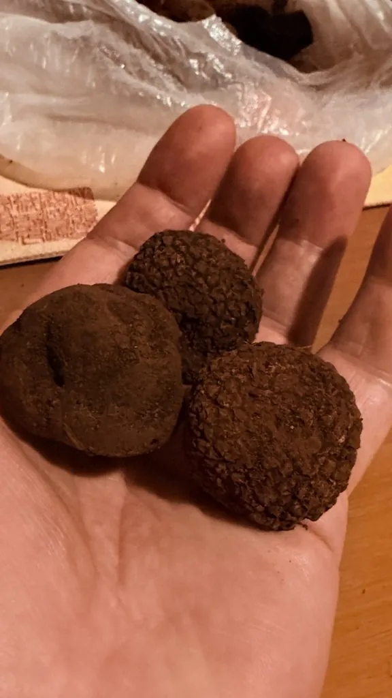

真菌 · 真菌界
印度块菌 Tuber indicum

印度块菌是中国西南出产的黑色块菌，外形与黑孢块菌相似，表面有黑色疣突、内部有白色纹理，香气偏淡，是重要的出口野生菌。
- 分类
- 门子囊菌门纲盘菌纲目盘菌目科块菌科属块菌属
- 栖息环境
- 西南山区栎林与松栎混交林的地下土层，与栎、华山松等形成菌根
- 地理分布
- 中国四川、云南、西藏等西南山区，印度、不丹等地也有分布
- 保护级别
- 暂无评估（IUCN 未评估，中国未列入重点保护名录）
物种志
印度块菌是子囊菌门块菌科的地下真菌，子实体近球形或不规则块状，直径 2–8 cm，表面黑褐色至黑色，密布细小的疣状突起，疣突比夏块菌更小、更密；内部产孢组织呈灰褐色至黑褐色，分布着白色的分枝状纹理，成熟后纹理变得不明显。子囊孢子椭圆形，表面有细网纹。
印度块菌生于地下土层中，与栎树、华山松、云南松等树木形成外生菌根，主要分布于中国四川、云南、西藏等西南山区，夏秋季成熟。它在外形上与欧洲的黑孢块菌十分相似，过去常被当作“黑块菌”出口，但香气较淡、风味不及后者，价格也低得多。印度块菌是中国重要的野生食用菌出口品种，采挖时需要保护菌丝体和幼小个体，避免过度采集导致产量下降。
形态与习性
- 子实体近球形，直径 2–8 cm
- 表面黑褐色，密布细小疣突
- 内部灰褐色，有白色分枝状纹理
- 共生与栎、华山松、云南松形成菌根
- 采收期夏秋季，地下 5–15 cm 处
- 食用性可食，香气较黑孢块菌淡
- 经济价值中国重要的野生食用菌出口品种
趣味知识
- 印度块菌外形酷似欧洲黑孢块菌，常被当作“黑块菌”出售。
- 它的香气比黑孢块菌淡，价格也低不少。
- 印度块菌多产自中国四川、云南、西藏的栎林和松栎混交林。
- 采挖块菌后要回填土坑，保护地下的菌丝体才能年年有收。